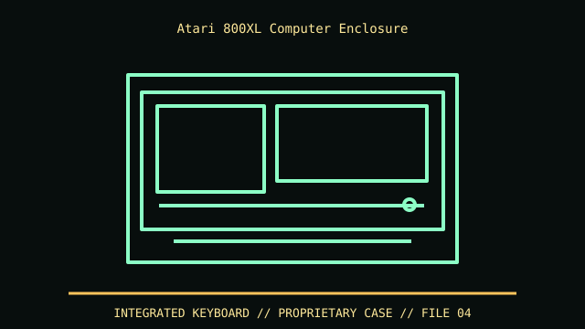

[ IDENTIFIED ENCLOSURE // ATARI 800XL, XL-SERIES KEYBOARD COMPUTER (1983) ]
Atari 800XL Computer Enclosure
Low-profile keyboard unit, about 13.5 × 11.5 × 2.5 in (W × D × H) in common catalog references; measure the specific regional shell. Leave side cartridge slot and rear peripheral ports accessible.

VARIANT / ARCHIVAL CAVEAT: 800XL shares styling with 600XL/1200XL but case, board and expansion opening differ. Confirm bottom 800XL identity, PAL/NTSC board and RAM/OS modifications. Preserve shielding and keyboard springs.
Mechanical specifications and fit
| Catalog identity | Atari 800XL, XL-series keyboard computer (1983) |
|---|---|
| Dimensions and clearances | Low-profile keyboard unit, about 13.5 × 11.5 × 2.5 in (W × D × H) in common catalog references; measure the specific regional shell. Leave side cartridge slot and rear peripheral ports accessible. |
| Drive bays / mounts | No internal disk bay in stock 800XL; 1050 disk drive, cassette and printer are separate peripherals. |
| Board, system and compatibility | Proprietary 6502C board and keyboard enclosure; SIO peripherals and cartridge interface are not PC-compatible. XL-series power and video use period Atari cabling. |
| Revision / identification | 800XL shares styling with 600XL/1200XL but case, board and expansion opening differ. Confirm bottom 800XL identity, PAL/NTSC board and RAM/OS modifications. Preserve shielding and keyboard springs. |
Preservation and installation notes
800XL shares styling with 600XL/1200XL but case, board and expansion opening differ. Confirm bottom 800XL identity, PAL/NTSC board and RAM/OS modifications. Preserve shielding and keyboard springs.
Proprietary 6502C board and keyboard enclosure; SIO peripherals and cartridge interface are not PC-compatible. XL-series power and video use period Atari cabling.
- Capture the complete model/SKU, serial/date label, board assembly and bay/backplane/riser identifiers before disassembly; keep matched screws, trays, carriers, feet and cables with the case.
- Check the cited manual's specific build option before transferring hardware. Published maximum GPU, drive, fan or radiator capacity may not be simultaneous when a removable cage or alternative riser occupies that volume.
- For rack and vintage systems, preserve the exact rails, shields, doors, brackets and model-specific safety instructions; do not infer compatibility from a familiar brand or physical connector shape.
Manufacturer manuals and archival sources
- Atari 800XL Computer Operator’s Manual — Internet ArchivePrimary manufacturer or model-specific technical/manual reference used for the identification and mechanical data above.
- Atari 8-bit technical documentation archiveSecond product manual, manufacturer resource or established technical archive; choose the exact regional SKU and revision.
When exact dimensions depend on configuration, the text says so; verify the measured specimen before making a fit or restoration decision.